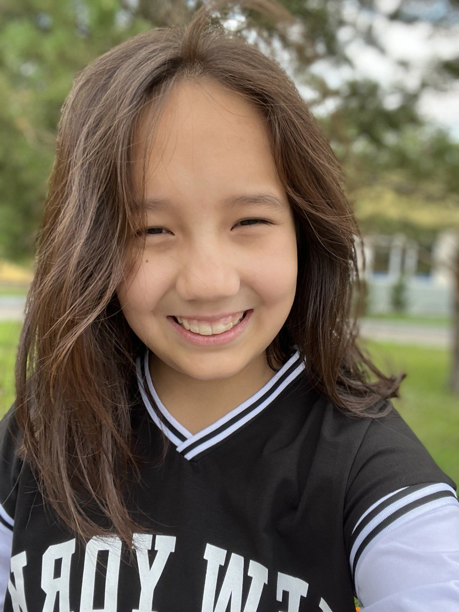
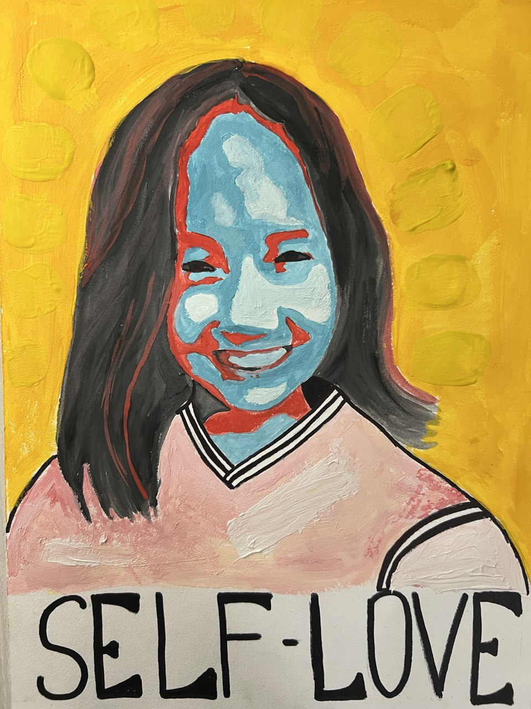

Всем привет!
Меня зовут Диана и мне 15 лет. Сейчас учусь в 10 классе в НИШ в городе Астана.
Помимо академической деятельности, я рисую и учусь программировать. Люблю фотографировать, редактировать фотографии, создавать постеры. А еще мне нравится писать статьи. Также очень люблю делать что-либо своими руками, например оригами, вышивка, бисероплетение и т.д.
Всегда говорить о своих хобби - это одно, а вот заниматься ими и делать это хорошо - совсем другое дело.
Поняла я это, создавая этот сайт-портфолио. Думаю, я смогла соединить программирование и рисование. Мне пришлось нелегко, но я довольна результатами. Мне в этих сферах еще развиваться и развиваться, ведь нет предела совершенству.
Кстати сейчас вы смотрите на мой первый полноценный сайт. Я им очень довольна, и надеюсь, вы тоже:) А также на мои первые картины, которые можно назвать картинами.
Что я еще могу сказать о себе? Я трудолюбивая и ответственная. Это совсем не означает, что у меня нет проблем с тайм-менеджментом и ленью, но я стараюсь. Какой я человек? Судить не мне. Я стараюсь быть лучшей версией себя и улучшаться с каждым днем. Не всегда получается, но я настойчивая, и поэтому буду стараться дальше.
|  |  |